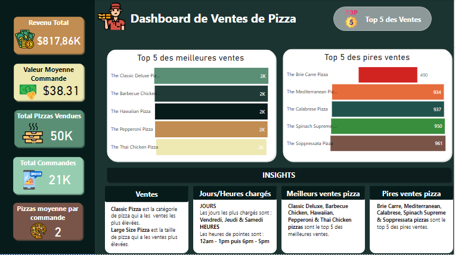
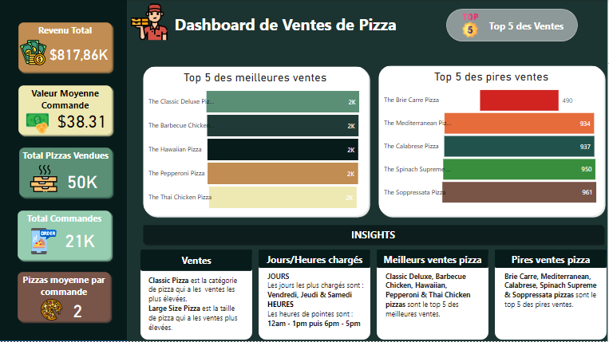

À propos de moi
Je suis Frans Floris Maffo, analyste de données junior issue du développement logiciel. Ma reconversion vers la data analytics n'est pas un changement de cap, mais l'aboutissement d'un parcours cohérent : j'y retrouve la même rigueur technique, mais appliquée à résoudre des problèmes business concrets.
À travers mes projets, j'ai appris une chose : ce qui compte, ce ne sont pas les données, mais les décisions qu'elles inspirent. C'est pourquoi je privilégie des analyses claires, visuelles et directement exploitables – que ce soit pour optimiser des processus ou anticiper des tendances.
Aujourd'hui, je cherche à rejoindre une équipe où la data n'est pas un sujet annexe, mais un levier central. Si votre entreprise prend ses décisions à la lumière des chiffres plutôt qu'à l'intuition, parlons-en.
Compétences
Visualisation de données
- Power BI
- Python (Matplotlib, Seaborn)
Programmation & Analyse
- Python (Pandas, NumPy)
- SQL
- Scikit-learn
Machine Learning
- Classification
- Clustering
- Prétraitement des données
Bases de données
- SQL Server
- MySQL
- SQLite
Projets Power BI
Analyse de la Comptabilité Générale

Ce rapport Power BI a été créé pour analyser la structure des coûts d'une entreprise, identifier les principaux centres de coûts et suivre leur évolution au fil du temps.
Objectif
Identifier les postes de dépenses les plus importants, suivre l'évolution des coûts par centre de coûts et optimiser les dépenses de l'entreprise.
Sources de données
Données de comptabilité générale, incluant les centres de coûts (production, valorisation, logistique, services généraux), les filiales, les années et les codes analytiques (achat de marchandises, matières premières, fournitures, maintenance, etc.).
Visualisations clés
- Tableau de bord interactif permettant de filtrer les données par filiale et par année.
- Les différents coûts.
- Top 5 des codes analytiques les plus importants en termes de coûts.
- Courbe d'évolution des coûts par centre de coûts au fil des années.
Insights
- Les coûts de Centre de Coût Logistique sont particulièrement élevés dans la filiale Filiale BOL.
- Le Code Analytique 110 a la somme de valeurs la plus élévée qui est de 2216780 au cours des trois dernières années.
Actions recommandées
- Négocier de meilleurs tarifs avec les fournisseurs pour les codes analytiques les plus coûteux.
- Mettre en place un plan d'optimisation des coûts pour les centres de coûts dont les dépenses augmentent de manière significative.
- Réaliser un audit des dépenses de maintenance pour identifier les gaspillages et les inefficacités.
Analyse Financière et Commerciale des Ventes
Ce rapport Power BI a été conçu pour analyser l'historique des ventes de produits en fonction de différentes dimensions (catégories, pays, segments) et analyser le profit.
Objectif
Comprendre les performances commerciales de l'entreprise, identifier les produits et les segments les plus rentables, et optimiser les stratégies de vente et de marketing.
Sources de données
Données de ventes, données de stocks.
Visualisations clés
- Tableau de bord interactif présentant les principaux indicateurs de performance (KPIs).
- Graphiques d'évolution du bénéfice par Mois et par Trimestre, par jour et par Année.
- Analyse du bénéfice par segment et par rabais.
Insights
- Le segment Small Business est le plus rentable en termes de profit.
- Le pays avec le plus grand bénéfice total est Germany avec une valeur de $3 264 749.
- Le bénéfice a un pourcentage de croissance de 88,18% à l'année 2014.
- Les remises importantes ont un impact négatif sur la marge bénéficiaire.
Actions recommandées
- Concentrer les efforts de vente et de marketing sur le segment Small Business.
- Optimiser la politique de remises pour maximiser le profit sans sacrifier les volumes de vente.
Analyse de la Gestion de Flotte

Ce rapport Power BI a été créé pour suivre et optimiser la gestion de la flotte de véhicules d'une entreprise, en analysant les coûts, la consommation de carburant et la maintenance.
Objectif
Réduire les coûts de gestion de la flotte, optimiser la consommation de carburant, améliorer la maintenance des véhicules et assurer la sécurité des conducteurs.
Sources de données
Données de gestion de flotte, incluant les données des clients, les véhicules, les conducteurs, etc.
Visualisations clés
- Tableau de bord présentant les principaux indicateurs de performance de la flotte (KPIs).
- Graphique d'évolution du coût de maintenance par mois.
- Tableau recapitulatif des transactions des différents conducteurs.
Insights
- Le coût par kilomètre est plus élevé pour le conducteur Amman Vega.
- La consommation de carburant est plus importante pendant le Mois de Mai.
- Certains conducteurs ont des coûts de maintenance significativement plus élevés que les autres.
Actions recommandées
- Mettre en place un programme de formation à l'éco-conduite pour réduire la consommation de carburant.
- Négocier des contrats de maintenance préventive pour réduire les coûts de maintenance corrective.
Analyse des Ventes de Pizzas en Ligne
 

Ce rapport Power BI a été conçu pour analyser les données de ventes de pizzas en ligne afin d'identifier les produits les plus populaires, d'optimiser l'expérience utilisateur, d'améliorer le marketing numérique et d'augmenter les revenus.
Objectif
Optimiser le menu en ligne, améliorer la gestion des stocks, optimiser les campagnes de marketing numérique, personnaliser l'expérience client et augmenter les revenus de la plateforme de vente en ligne.
Sources de données
Données de ventes de pizzas en ligne.
Visualisations clés
- Tableau de bord présentant les principaux indicateurs de performance de la plateforme de vente en ligne (KPIs)
- Analyse des ventes par catégorie de pizza (Classic, Supreme, Veggie...) et par taille (S, M, L, XL, XXL).
- Analyse des commandes par jour et par heure.
- Top 5 des meilleures et des pires ventes de pizzas.
Insights
- La pizza Classic est la plus vendue en ligne, suivie de la pizza Supreme.
- Les ventes en ligne sont plus importantes le Samedi et a l'heure de 12am.
- La valeur moyenne par commande est plus élevée lorsque les clients commandent des pizzas de taille L.
Actions recommandées
- Mettre en avant les pizzas les plus vendues dans le menu en ligne et les promotions.
- Personnaliser les offres en fonction des préférences des clients et de leur historique de commandes.
- Proposer des offres groupées (pizza + boisson + dessert) pour encourager les clients à commander des pizzas de grande taille.
Projets Python
Segmentation de la Clientèle des Centres Commerciaux
Ce projet Python a été réalisé pour segmenter la clientèle d'un centre commercial en utilisant l'algorithme de clustering K-Means.
Objectif
Identifier des groupes de clients homogènes afin d'optimiser les stratégies marketing.
Sources de données
L'ensemble de données "Mall_Customers.csv" contient des informations sur les clients d'un centre commercial, telles que leur identifiant, leur âge, leur sexe, leur revenu annuel et leur score de dépenses.
Algorithmes utilisés
Clustering K-Means
Résultats
- Le clustering K-Means a permis d'identifier 05 segments de clientèle distincts.
- Le segment 02 se caractérise par un revenu annuel élevé et un score de dépenses élevé.
- Le segment 05 se caractérise par un revenu annuel faible et un score de dépenses faible.
Actions recommandées
- Adapter les campagnes marketing aux caractéristiques de chaque segment de clientèle.
- Proposer des offres personnalisées aux clients à fort potentiel.
- Mettre en place des programmes de fidélité pour les clients les plus fidèles.
Détection des Fraudes par Carte de Crédit

Ce projet Python a été réalisé pour détecter les transactions frauduleuses par carte de crédit en utilisant des techniques de machine learning.
Objectif
Identifier les transactions frauduleuses afin de protéger les clients et de minimiser les pertes financières.
Sources de données
L'ensemble de données contient des transactions anonymisées effectuées par carte de crédit en septembre 2013. Les caractéristiques (V1-V28) sont le résultat d'une transformation PCA. Les caractéristiques 'Time' et 'Amount' sont également incluses. La variable cible 'Class' indique si la transaction est frauduleuse (1) ou non (0).
Algorithmes utilisés
Régression Logistique, précédé d'une étape de standardisation des données.
Résultats
- Nous avons obtenu 284315 transactions legales et 492 transactions frauduleuses sur les données de test.
- La segmentation du jeu de données en transactions legales et frauduleuses puis l'extraction de 492 transactions parmi les transactions legales pour constituer au mieux les données à entraîner.
- Le modèle Pipe a une précision de 0.9695431472081218 pour la détection des fraudes.
Actions recommandées
- Implémenter le modèle de détection de fraude en temps réel.
- Enquêter sur les transactions signalées comme suspectes.
- Surveiller les performances du modèle et le ré-entraîner si nécessaire.